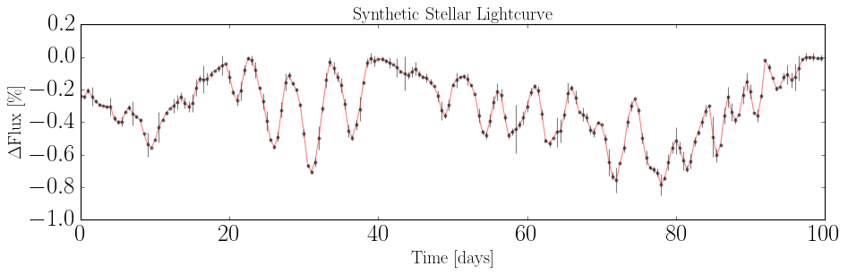
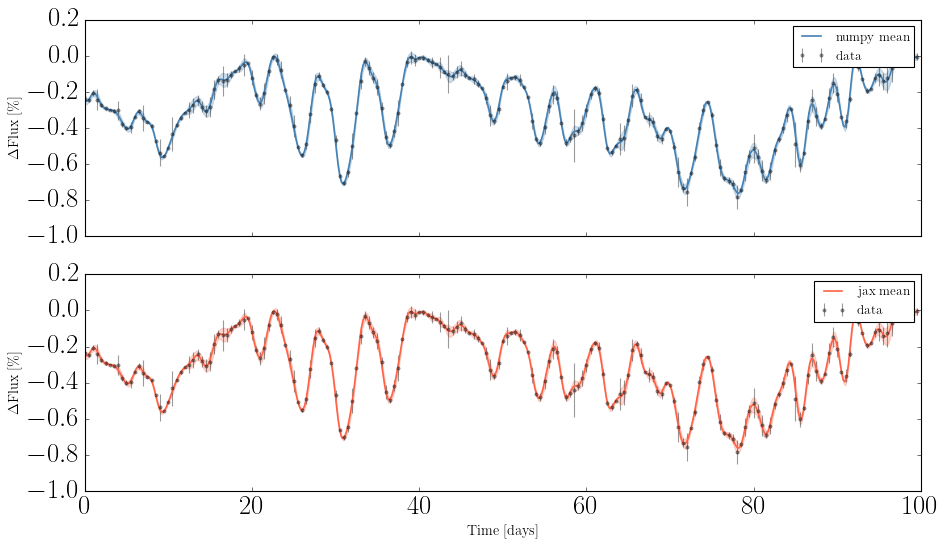
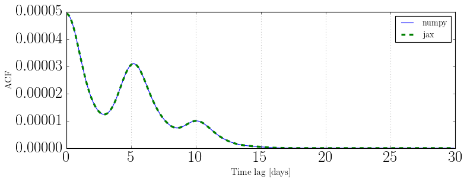

GP Solver with JAX or numpy¶
This notebook shows how to use src_numpy and src_jax to:
Generate a synthetic stellar lightcurve
Fit a GP model with
GPSolverCompute the log-likelihood and predict the GP mean
Compare NumPy vs JAX performance
[21]:
import sys
import time
import numpy as np
import matplotlib.pyplot as plt
sys.path.append("../..")
1. Generate Synthetic Data¶
[22]:
from src_numpy.starspot import LightcurveModel
np.random.seed(42)
theta_true = dict(peq=5.0, kappa=0.3, inc=np.pi/3, nspot=40,
lspot=10.0, tau=5.0, alpha_max=0.05, fspot=0.)
lc = LightcurveModel(**theta_true, tsim=100, tsamp=0.5,
lat=[-np.pi/2, np.pi/2], long=[0, 2*np.pi])
tobs = lc.t
flux = lc.flux
flux_err = np.abs(np.random.normal(0, 0.2 * np.std(flux), flux.shape))
plt.figure(figsize=[12, 4])
plt.errorbar(tobs, flux * 100 - 100, yerr=flux_err * 100, fmt=".k", capsize=0, alpha=0.5)
plt.plot(tobs, flux * 100 - 100, color="r", alpha=0.5)
plt.xlabel("Time [days]", fontsize=18)
plt.ylabel(r"$\Delta$Flux [\%]", fontsize=18)
plt.title("Synthetic Stellar Lightcurve", fontsize=18)
plt.tight_layout()
plt.show()
print(f"{len(tobs)} observations")

200 observations
2. Fit GP with src_numpy¶
[23]:
from src_numpy.gp_solver import GPSolver as GPSolverNumpy
t0 = time.time()
gp_np = GPSolverNumpy(tobs, flux, flux_err, theta_true)
t_build_np = time.time() - t0
t0 = time.time()
loglike_np = gp_np.log_likelihood()
t_ll_np = time.time() - t0
print(f"[numpy] build: {t_build_np:.3f} s")
print(f"[numpy] log-likelihood: {t_ll_np:.3f} s → {loglike_np:.2f}")
[numpy] build: 0.137 s
[numpy] log-likelihood: 0.000 s → 1108.41
3. Fit GP with src_jax¶
Choose which device to run JAX computations (cpu or gpu)
[24]:
import os
os.environ["JAX_ENABLE_X64"] = "True"
DEVICE = "gpu"
os.environ["JAX_PLATFORMS"] = DEVICE
from src_jax.gp_solver import GPSolver as GPSolverJAX
t0 = time.time()
gp_jax = GPSolverJAX(tobs, flux, flux_err, theta_true)
t_build_jax = time.time() - t0
# First call triggers JIT compilation
_ = gp_jax.log_likelihood()
t0 = time.time()
loglike_jax = gp_jax.log_likelihood()
t_ll_jax = time.time() - t0
print(f"[jax] build: {t_build_jax:.3f} s")
print(f"[jax] log-likelihood: {t_ll_jax:.3f} s → {float(loglike_jax):.2f}")
[jax] build: 0.321 s
[jax] log-likelihood: 0.000 s → 1108.41
4. GP Prediction¶
[25]:
xpred = np.linspace(tobs.min(), tobs.max(), 500)
mu_np, var_np = gp_np.predict(xpred, return_cov=False)
mu_jax, var_jax = gp_jax.predict(xpred, return_cov=False)
std_np = np.sqrt(np.asarray(var_np))
std_jax = np.sqrt(np.asarray(var_jax))
fig, axes = plt.subplots(2, 1, figsize=[12, 7], sharex=True)
for ax, mu, std, label, color in zip(
axes,
[mu_np, mu_jax],
[std_np, std_jax],
["numpy", "jax"],
["steelblue", "tomato"]):
ax.errorbar(tobs, flux * 100 - 100, yerr=flux_err * 100,
fmt=".k", capsize=0, alpha=0.4, label="data")
ax.plot(xpred, np.asarray(mu) * 100 - 100, color=color, lw=1.5, label=f"{label} mean")
ax.fill_between(xpred,
(np.asarray(mu) - std) * 100 - 100,
(np.asarray(mu) + std) * 100 - 100,
alpha=0.25, color=color)
ax.set_ylabel(r"$\Delta$Flux [\%]", fontsize=13)
ax.legend(fontsize=12)
axes[-1].set_xlabel("Time [days]", fontsize=13)
plt.tight_layout()
plt.show()

5. Kernel / ACF¶
[26]:
tlags = np.arange(0, 30, 0.1)
acf_np = gp_np.compute_kernel(tlags)
acf_jax = gp_jax.compute_kernel(tlags)
plt.figure(figsize=[10, 4])
plt.plot(tlags, acf_np, label="numpy", lw=1)
plt.plot(tlags, np.asarray(acf_jax), label="jax", lw=3, ls="--")
for ii in range(1, 7):
plt.axvline(ii * theta_true["peq"], color="gray", ls=":", alpha=0.5)
plt.axhline(0, color="gray", ls="-", alpha=0.3)
plt.xlabel("Time lag [days]", fontsize=14)
plt.ylabel("ACF", fontsize=14)
plt.legend(fontsize=13)
plt.tight_layout()
plt.show()

6. Find MAP Estimate¶
Optimize the GP hyperparameters by maximizing the log-posterior.
[27]:
theta0 = dict(peq=4.0, kappa=0.1, inc=np.pi/4,
lspot=8.0, tau=3.0, nspot=20, alpha_max=0.1, fspot=0.0)
free_keys = ["peq", "kappa", "inc", "lspot", "tau", "sigma_k"]
# numpy
t0 = time.time()
theta_map_np, result_np = gp_np.find_map(theta0=theta0, keys=free_keys)
print(f"[numpy] MAP in {time.time()-t0:.2f} s")
# jax
t0 = time.time()
theta_map_jax, result_jax = gp_jax.find_map(theta0=theta0, keys=free_keys)
print(f"[jax] MAP in {time.time()-t0:.2f} s")
print("\nParameter true numpy MAP jax MAP")
print("-" * 50)
for k in free_keys:
tv = theta_true.get(k, float('nan'))
nv = theta_map_np.get(k, float('nan'))
jv = theta_map_jax.get(k, float('nan'))
print(f"{k:<14} {tv:8.4f} {nv:8.4f} {jv:8.4f}")
[numpy] MAP in 39.52 s
[jax] MAP in 5.10 s
Parameter true numpy MAP jax MAP
--------------------------------------------------
peq 5.0000 5.3930 7.3448
kappa 0.3000 0.1305 0.1594
inc 1.0472 1.0520 0.9222
lspot 10.0000 7.6089 9.3803
tau 5.0000 3.1403 3.0420
sigma_k nan 0.0014 0.0026